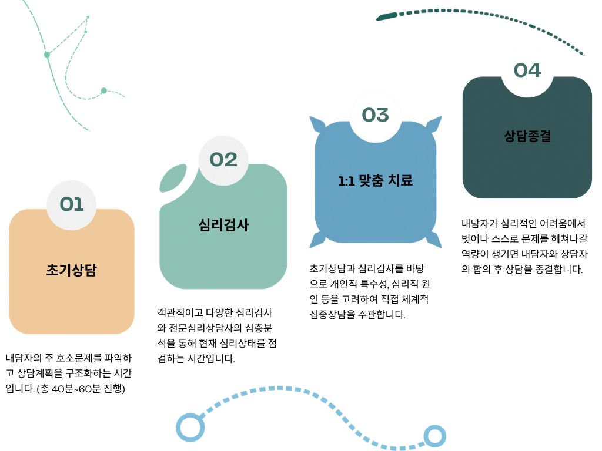

상담 절차 안내
마음의 회복을 위한 첫걸음, 체계적이고 전문적인 과정을 통해 당신과 함께하겠습니다.
예약부터 종결까지, 마음 센터의 상담은 아래와 같은 단계로 진행됩니다.

01. 상담접수
100% 예약제로 운영되고 있습니다. 원하시는 상담 유형과 상담진행방식에 대해서 선택하실 수 있습니다.(예: 온라인 상담, 오프라인 상담)
홈페이지의 '상담예약' 양식을 통해 상담신청을 진행하실 수 있습니다.
02. 초기 상담
전문 상담사와 만나 현재 겪고 있는 어려움과 상담의 목표를 설정하는 과정입니다.
('자가진단' / '나를 알아보기') 메뉴를 통해서 무료로 현재 마음건강상태를 점검해 보실 수 있습니다.
03. 검사 & 해석상담
전문 상담사와 함께 심리검사 결과를 해석하고, 개인의 상황에 맞춘 치료 방향을 논의하는 과정입니다.
04. 본 상담 & 종결
인지행동치료(CBT) 등 전문 프로그램을 진행하며, 내담자 마다 1:1 맞춤 프로그램을 통해 진행 프로그램의 항목은 다를 수 있습니다. 내담자 본인 스스로 마음을 돌볼 힘을 얻었다고 판단하는 경우 종결합니다.
심층 분석 및 맞춤형 상담
객관적인 검사를 바탕으로 개인에게 최적화된 심리 치료 프로그램을 구성합니다.

01. 초기상담
초기상담은 내담자의 현재 상태와 주요 고민을 파악하고, 향후 상담 방향을 설정하기 위한 첫 단계입니다. 이 과정에서는 개인의 감정, 경험, 환경 등을 종합적으로 이해하며, 상담 목표를 함께 구체화합니다. 또한 상담에 대한 기대와 궁금증을 해소하고, 신뢰 관계를 형성하는 중요한 시간입니다.
02. 심리검사
심리검사 단계는 내담자의 정서, 성격, 인지 특성 등을 객관적으로 이해하기 위한 과정입니다. 표준화된 검사를 통해 개인이 인식하지 못했던 내면의 패턴과 문제의 원인을 파악할 수 있으며, 상담의 방향을 보다 정밀하게 설정하는 데 도움을 줍니다. 검사 결과는 해석 상담을 통해 충분히 설명되며, 향후 개입 전략 수립의 기초 자료로 활용됩니다.
03. 1:1 맞춤 상담
1:1 맞춤 상담은 내담자의 특성과 문제 상황에 맞춰 개인화된 방식으로 진행되는 심층 상담 단계입니다. 초기상담과 심리검사를 통해 파악된 내용을 바탕으로 구체적인 목표를 설정하고, 정서적 어려움과 행동 패턴을 체계적으로 다룹니다. 또한 필요 시 병원과 연계한 진료 및 치료가 함께 이루어질 수 있도록 치료 연계를 지원하여 보다 통합적인 회복과 변화를 도모합니다.
04. 상담종결
상담종결 단계는 내담자가 설정한 목표의 달성 여부를 점검하고, 변화 과정을 함께 정리하는 과정입니다. 상담가는 내담자와의 협의를 통해 추가 상담의 필요성을 평가하고, 종결 시점을 결정합니다. 또한 종결 이후에도 안정적인 상태를 유지할 수 있도록 사후관리 계획을 수립하여, 지속적인 자기이해와 긍정적 변화를 이어갈 수 있도록 지원합니다.